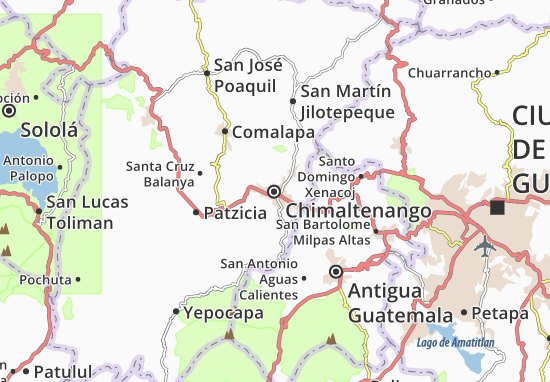
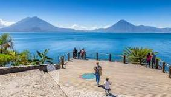

Paanajachnajachel es entonces el pueblo más turístico del lago, porque es donde llega todo el mundo.
Luego se toma la lancha, para Santiago, Santa Catatalina, San Pedro o Santa Cruz.
Pero por Panajachel todos pasan.La calle principa esta conertida en un gran mercadillo para los turistas.
Te venden tejidos mayas, recuerdos de la región, artesanias hechas de madera o recicladas con latas de coca cola.